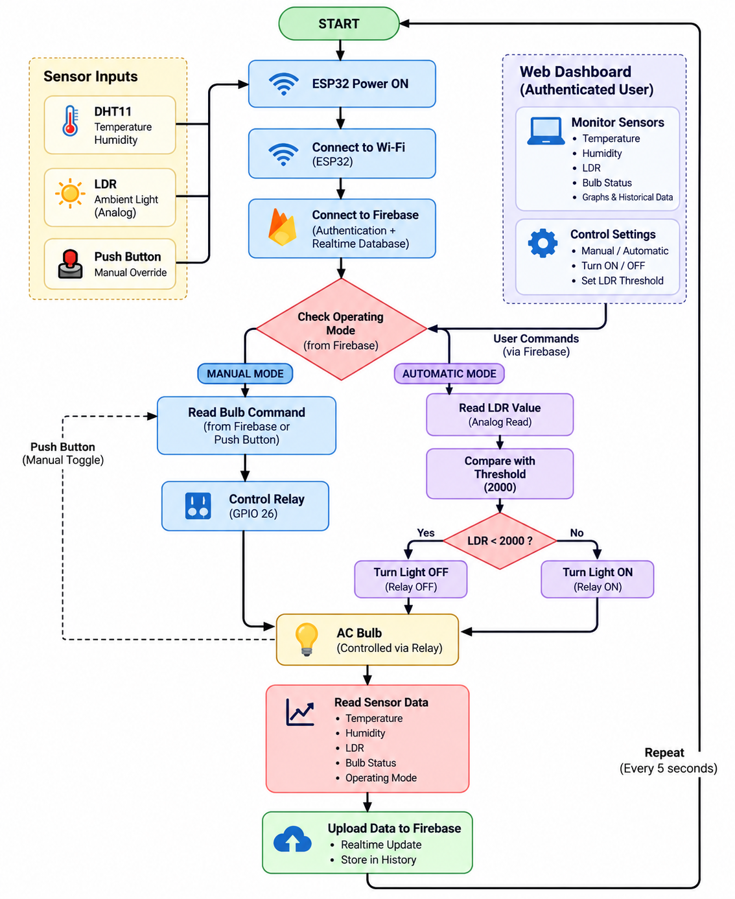
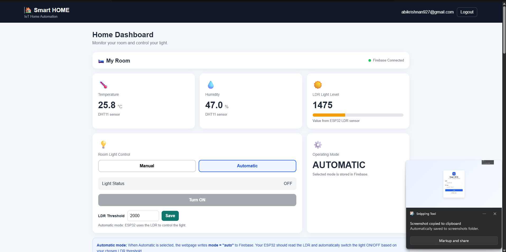
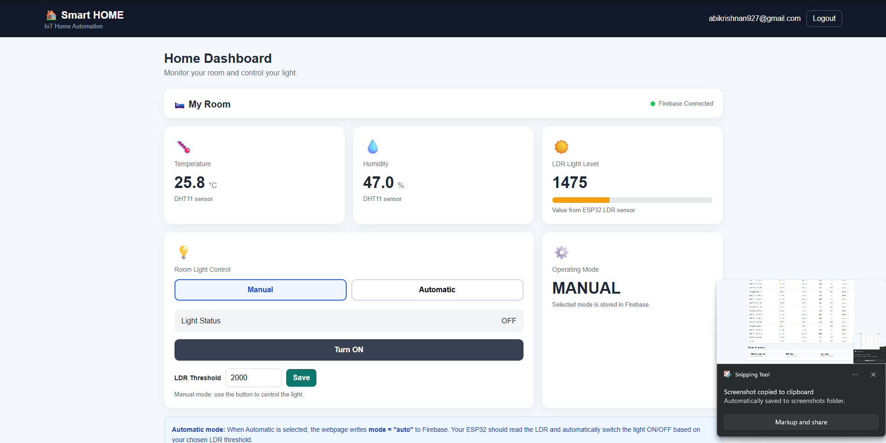
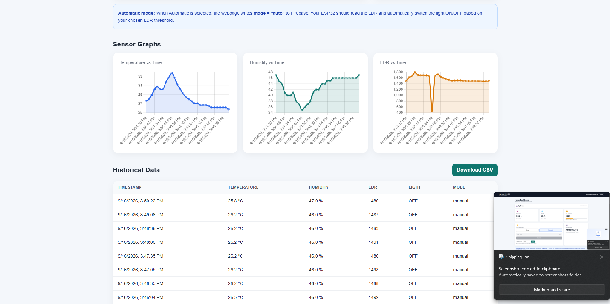

Controller
ESP32 WROOM-32
Wi-Fi enabled microcontroller for embedded automation
PROJECT 05 / INTERNET OF THINGS
This project focuses on the physical automation layer: an ESP32 reads DHT11 temperature and humidity, measures light using an LDR, responds to a push button, and controls a relay-driven bulb through firmware logic and Wi-Fi communication with Firebase.
Controller
Wi-Fi enabled microcontroller for embedded automation
Sensors
Temperature, humidity, and ambient light sensing
Actuation
Physical appliance control using GPIO and firmware logic
01 / Overview
The ESP32-based smart home system combines environmental sensing, local control logic, and cloud synchronization to automate a home appliance. The hardware reads sensor values, evaluates operating conditions, and toggles a relay to control a bulb or appliance. The same project also exchanges status and command data with Firebase for web-based visibility and control.
02 / Objective
Developing an ESP32-based smart home automation system that monitors environmental conditions and controls a light/appliance using sensors, a physical button, relay control, Wi-Fi, and Firebase communication.
The embedded system reads data from the DHT11 and LDR, interprets local conditions, and decides whether to switch the relay. A physical push button allows manual override, while Firebase acts as the cloud bridge for remote state and dashboard synchronization.
03 / Problem Statement
A common smart-home problem is the need to automate lighting based on real conditions while supporting both convenience and manual control. This project addresses that by using sensor-driven automation, local override logic, and cloud connectivity in one embedded system. The result is a simple but effective home automation setup that reacts to changes in temperature, humidity, and ambient light.
04 / Hardware Components
| Component | ESP32 pin |
|---|---|
| DHT11 data | GPIO 4 |
| LDR / ADC | GPIO 34 |
| Push button | GPIO 14 |
| Relay control | GPIO 26 |
| Status LED | GPIO 2 |
The supplied Project 4 assets include dashboard and flow-related images, but no dedicated hardware board photographs were provided. The implementation details above are therefore based on the project’s documented pin mapping and firmware logic rather than invented hardware imagery.
05 / Circuit
The ESP32 acts as the central embedded controller. The DHT11 and LDR feed environmental values into GPIO and ADC pins, while the relay output drives the light or appliance circuit. The push button provides an immediate local override, and the status LED indicates the current output state. Together, the wiring creates a compact smart-home controller that can run autonomously or synchronize with a cloud dashboard.

06 / Firmware
The firmware is implemented in Arduino/C++ on the ESP32. It initializes Wi-Fi, configures GPIO, reads the DHT11 sensor, samples the LDR value, debounces the button, and updates the relay state. It also publishes telemetry to Firebase and listens for cloud commands that update the device state.
#include <WiFi.h>
#include <Firebase_ESP_Client.h>
#include <DHT.h>
#define DHT_PIN 4
#define DHT_TYPE DHT11
#define LDR_PIN 34
#define BUTTON_PIN 14
#define RELAY_PIN 26
#define STATUS_LED 2
DHT dht(DHT_PIN, DHT_TYPE);
void setup() {
Serial.begin(115200);
dht.begin();
pinMode(RELAY_PIN, OUTPUT);
pinMode(STATUS_LED, OUTPUT);
pinMode(BUTTON_PIN, INPUT_PULLUP);
digitalWrite(RELAY_PIN, LOW);
WiFi.begin("YOUR_WIFI_SSID", "YOUR_WIFI_PASSWORD");
while (WiFi.status() != WL_CONNECTED) {
delay(400);
Serial.print(".");
}
}
void loop() {
float temp = dht.readTemperature();
float hum = dht.readHumidity();
int ldrRaw = analogRead(LDR_PIN);
int reading = digitalRead(BUTTON_PIN);
if (reading == LOW) {
digitalWrite(RELAY_PIN, HIGH);
digitalWrite(STATUS_LED, HIGH);
} else {
digitalWrite(RELAY_PIN, LOW);
digitalWrite(STATUS_LED, LOW);
}
Serial.printf("Temp: %.1f C | Hum: %.1f %% | LDR: %d\n", temp, hum, ldrRaw);
delay(2000);
}07 / DHT11 Monitoring
The DHT11 sensor measures indoor temperature and relative humidity. These values are read by the ESP32 at regular intervals and published to Firebase for dashboard monitoring. This makes it possible to observe environmental conditions in real time from the web interface while the physical hardware remains responsible for local decision-making.
08 / LDR Detection
The LDR changes resistance with ambient light intensity. The ESP32 reads the analog voltage via ADC, converts it to a light-level estimate, and uses it as part of the automatic decision logic for deciding when the bulb should be switched on or off. This supports daylight-aware lighting behavior without needing direct manual toggling all the time.
09 / Local Button
10 / Relay
The relay module is the hardware bridge between the ESP32 logic and the AC bulb or appliance. By switching the relay output on and off, the firmware can safely control a connected load based on button input, sensor thresholds, or Firebase-driven commands. This is the key actuation layer of the smart-home system.
11 / Automatic Control
The available project assets do not include a precise threshold value screenshot, so the behavior is described by the documented logic rather than an asserted numeric value.
12 / Wi-Fi
The ESP32 connects to a local Wi-Fi network through its wireless interface. This allows it to publish telemetry to Firebase and receive cloud-driven commands from the web dashboard. Wi-Fi connectivity provides the bridge between the embedded system and the higher-level IoT application.
13 / Firebase
controls
├── bulbState
├── mode
└── threshold
telemetry
└── live
├── temperature
├── humidity
├── lux
├── bulbState
└── timestamp14 / Demonstration
The supplied Project 4 folder includes a video demonstration that documents the complete system behavior. It is referenced here as the project demonstration asset for the smart-home hardware and cloud-driven control flow.
15 / Gallery



16 / Technologies Used
17 / Results
18 / Learning
19 / Connection
Project 4 is the web dashboard and Firebase cloud layer, while Project 5 is the ESP32 sensor and control layer. Firebase acts as the communication bridge between them, allowing the embedded system to publish data and receive control commands while the web system monitors and interacts with the same environment.
These are separate portfolio projects, but together they form the complete IoT system: the hardware senses and acts, while the dashboard monitors and controls the system through Firebase.